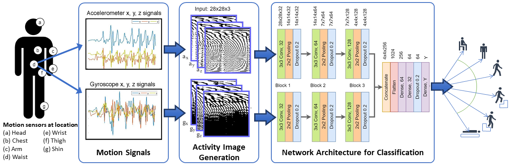
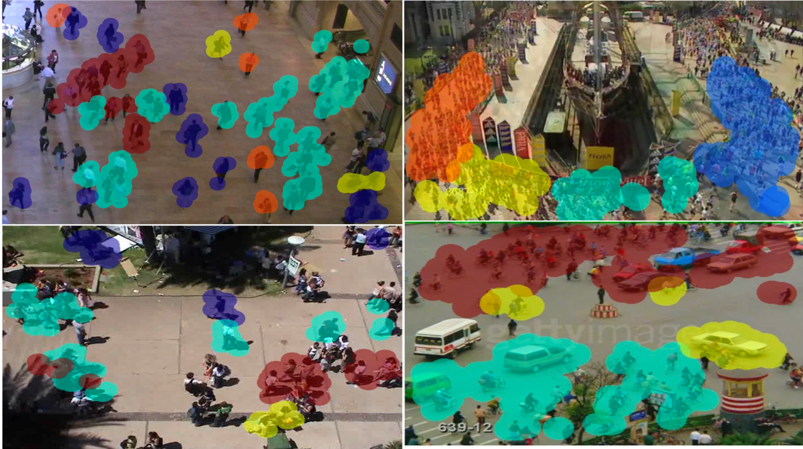
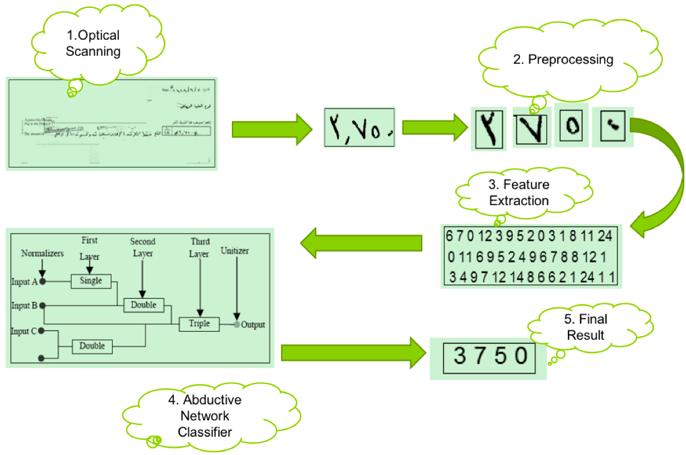
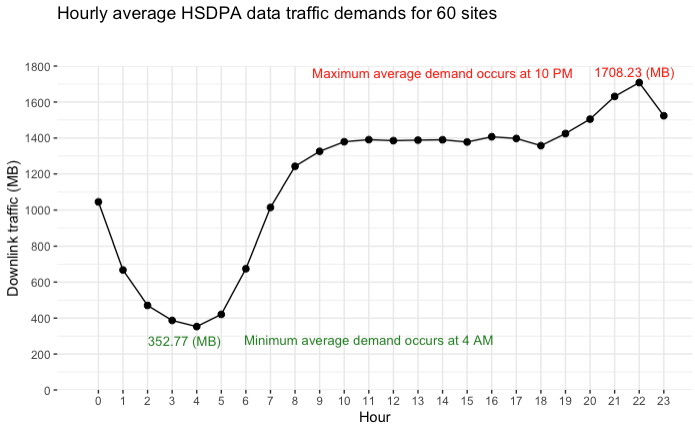
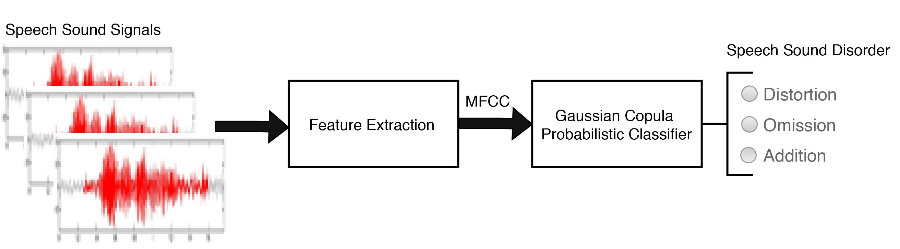

Data Science Based Projects
I am compiling a list of data science based projects that I have completed in the recent past. I will be updating this page with more project output soon.
1. Human Activity Recognition using wearable sensors
This project addresses the problem of classifying motion signals acquired via wearable sensors for the recognition of human activity, facilitating the development of an effective automated health monitoring system for the elderly. We collect motion data from different parts of the human body using sensors and analyse the different patterns of the signal using machine learning. We then classify the physical activities performed by the user based on the patterns. You can find the published journal paper describing the technical details of the project here

2. Crowd Motion Clustering
This project addresses the problem of clustering people into groups with homogeneous spatial and directional properties in a surveillance scene to promote anomaly detection in crowd activities and identify the formation of congested areas. Using data analytics and machine learning, we analyse the pattern of movement of people in a video and identify the direction of movement as well as the group to which an individual belong to in a crowd. We then segment the crowd based on the proximity and direction and tag group or indvidual with an ID in real time. In the video shown below, the color and arrow show the segmented group and/or individual, and the direction of their movement, respectively. The journal paper describing the technical details of the work can be accessed here

3. Automatic Arabic Cheque Analysis and Recognition
This project addresses the problem of recognizing handwritten Arabic numerals that appears in cheques to facilitate automated and improved banking transactions in Arabic. We scan the handwritten Arabic cheque and perform image processing on the image to segment the texts in it. Then we use machine learning to automatically identify the Arabic numbers written in the cheque. This automatic recognition allows the cheque to be process digitally with ease. The conference paper describing the technical details of the work can be accessed here

4. Telecomm Network Data Traffic Prediction
This project addresses the problem of learning a regression model for the prediction of data traffic in a cellular network, facilitating the efficient optimization and scheduling of mobile data network resources. We use neural network to create a a model to forecast the traffic demand of given cellular mobile network provider in an urban area with a very high accuracy. The figure below shows the peak and off peak periods for the aggregated data from 60 different cell sites. The journal paper describing the technical details of the work can be accessed here

5. Automatic Recognition of Speech Sound Error in Children
The accurate and automatic recognition of speech sound errors in children is crucial to facilitate the early detection and correction of any faulty phonological process in their early life. This project addresses the problem of speech sound error classifcation in native Arabic children when they wrongly pronounce Arabic words containing the letter r (pronounced as /ra/). By using data analystics and machine learning, we identify whether the speech sound error occurs when the letter appears at the beginning, middle, or end of the words. Also we were able to classify the error as either distortion, omission or addition of the letter sound. The journal paper describing the technical details of the work can be accessed here
